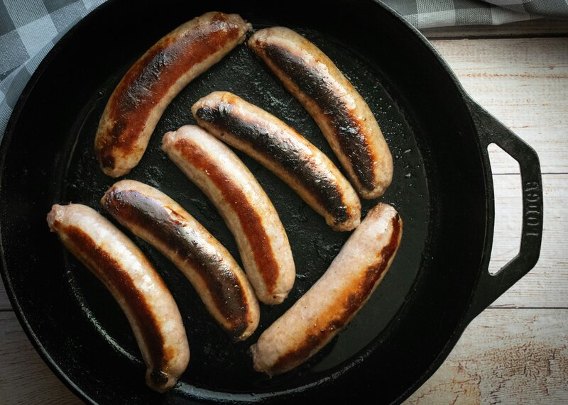

Cast iron has a reputation for being fussy. It isn't. Your grandmother's pan survived decades of daily use without YouTube tutorials, specialty oils, or dish soap anxiety. Cast iron needs three things: season it, clean it, cook with it.

What seasoning actually is
Seasoning isn't a coating — it's polymerized oil bonded to the iron at a molecular level. When you heat oil past its smoke point on the surface of the pan, the fat molecules cross-link into a hard, slick, non-stick layer. This layer builds over time with use. Every time you cook with oil, you're adding to it.
A brand-new cast iron pan won't perform like a thirty-year-old one. The non-stick surface comes from layers of seasoning built up through cooking. Be patient. It gets better every time you use it.
How to season a pan
For a new pan, a thrift store find, or a pan that's lost its seasoning — the method is the same.
- Clean it. Scrub with hot water and mild soap. Yes, soap is fine — this myth comes from the days when soap contained lye, which strips seasoning. Modern dish soap doesn't. Dry thoroughly, then put the pan on low heat for a minute to evaporate any remaining moisture.
- Oil it. Pour a small amount of high-smoke-point oil into the pan — canola, grapeseed, or vegetable oil. Rub it over every surface with a paper towel. Then take a clean paper towel and wipe it off like you made a mistake. The pan should look dry. The oil layer you want is microscopic.
- Heat it. Place the pan upside down in a cold oven. Set to 450°F. Put foil on the rack below to catch drips. Once the oven reaches temperature, set a timer for one hour. Turn off the oven and let the pan cool inside.
Repeat 2–3 times for a new or stripped pan. For a pan that just needs a refresh, once is enough.
The full Cast Iron Care Guide covers daily cleaning routines, restoring neglected pans, a troubleshooting table for common problems, what to cook (and what to use a different pan for), and a tear-out quick reference card.
Cast Iron Care Guide on Etsy →